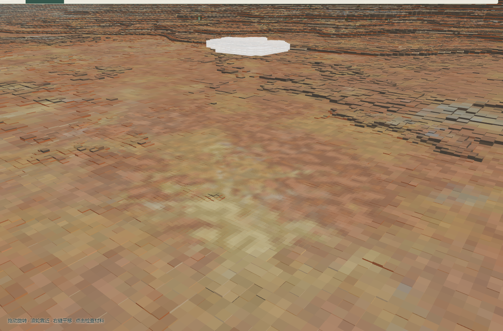
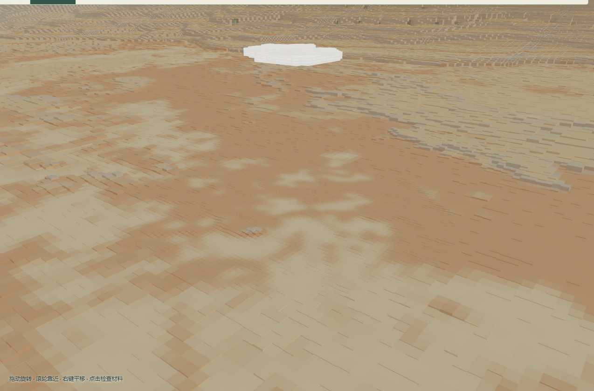
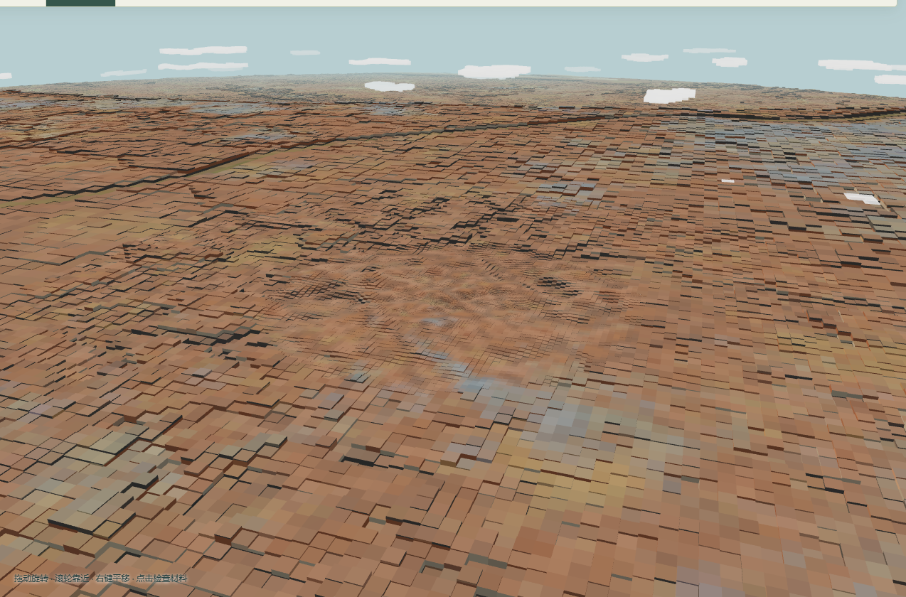
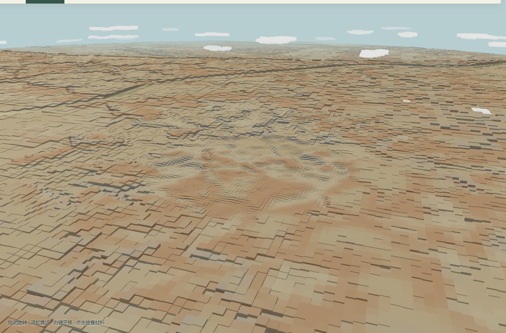

<!doctype html><meta charset="utf-8"><title>Orun 材质对照</title><style>body{margin:0;background:#202c2a;color:#eee9da;font:16px system-ui}main{max-width:1500px;margin:auto;padding:36px}h1{font-weight:500}p{color:#c9ccb8;line-height:1.7}.pair{display:grid;grid-template-columns:1fr 1fr;gap:16px;margin:24px 0 40px}figure{margin:0}img{width:100%;border-radius:8px}figcaption{padding:10px 0}@media(max-width:800px){.pair{grid-template-columns:1fr}}</style><main><h1>Orun · 同一地形，两种材料分布</h1><p>每个方块仍为单色。颜色由母岩来源、覆盖厚度和沿坡沉积共同决定。</p><h2>崖前平原</h2><section class="pair"><figure><figcaption>原有配色</figcaption></figure><figure><figcaption>地貌材质</figcaption></figure></section><h2>高原顶</h2><section class="pair"><figure><figcaption>原有配色</figcaption></figure><figure><figcaption>地貌材质</figcaption></figure></section><p><a href="README.md" style="color:#e6d09a">实现与验证记录</a></p></main>